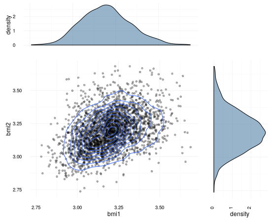

Twin analysis
Table of Contents
Mets package
This document provides a brief tutorial to analyzing twin data using
the mets package:
library("mets") options(warn=-1)
The development version may be installed from github, i.e., with the
devtools package:
devtools::install_github("kkholst/lava") devtools::install_github("kkholst/mets")
Twin analysis, continuous traits
In the following we examine the heritability of Body Mass Index\n{}korkeila_bmi_1991 hjelmborg_bmi_2008, based on data on self-reported BMI-values from a random sample of 11,411 same-sex twins. First, we will load data
data("twinbmi")
head(twinbmi)
tvparnr bmi age gender zyg
100001.1 100001 26.33289 57.57974 male DZ
100002.1 100002 28.65014 57.04860 male MZ
100003.1 100003 28.40909 57.67830 male DZ
100004.1 100004 27.25089 53.51677 male DZ
100005.1 100005 27.77778 52.57495 male DZ
100006.1 100006 28.04282 52.57221 male DZ
The data is on long format with one subject per row.
tvparnr- twin id
bmi- Body Mass Index (\(\unitfrac{kg}{m^2}\))
age- Age (years)
gender- Gender factor (male,female)
zyg- zygosity (MZ,DZ)
we transpose the data allowing us to do pairwise analyses
twinwide <- fast.reshape(twinbmi, id="tvparnr",varying=c("bmi")) head(twinwide)
tvparnr bmi1 age gender zyg bmi2
100001.1 100001 26.33289 57.57974 male DZ 25.46939
100002.1 100002 28.65014 57.04860 male MZ NA
100003.1 100003 28.40909 57.67830 male DZ NA
100004.1 100004 27.25089 53.51677 male DZ 28.07504
100005.1 100005 27.77778 52.57495 male DZ NA
100006.1 100006 28.04282 52.57221 male DZ 22.30936
Next we plot the association within each zygosity group
library("cowplot") scatterdens <- function(x) { sp <- ggplot(x, aes_string(colnames(x)[1], colnames(x)[2])) + theme_minimal() + geom_point(alpha=0.3) + geom_density_2d() xdens <- ggplot(x, aes_string(colnames(x)[1],fill=1)) + theme_minimal() + geom_density(alpha=.5)+ theme(axis.text.x = element_blank(), legend.position = "none") + labs(x=NULL) ydens <- ggplot(x, aes_string(colnames(x)[2],fill=1)) + theme_minimal() + geom_density(alpha=.5) + theme(axis.text.y = element_blank(), axis.text.x = element_text(angle=90, vjust=0), legend.position = "none") + labs(x=NULL) + coord_flip() g <- plot_grid(xdens,NULL,sp,ydens, ncol=2,nrow=2, rel_widths=c(4,1.4),rel_heights=c(1.4,4)) return(g) }
We here show the log-transformed data which is slightly more symmetric and more appropiate for the twin analysis (see Figure fig:scatter1 and fig:scatter2)
mz <- log(subset(twinwide, zyg=="MZ")[,c("bmi1","bmi2")]) scatterdens(mz)

Figure 1: Scatter plot of logarithmic BMI measurements in MZ twins
dz <- log(subset(twinwide, zyg=="DZ")[,c("bmi1","bmi2")]) scatterdens(dz)

Figure 2: Scatter plot of logarithmic BMI measurements in DZ twins.
The plots and raw association measures shows considerable stronger dependence in the MZ twins, thus indicating genetic influence of the trait
cor.test(mz[,1],mz[,2], method="spearman")
Spearman's rank correlation rho
data: mz[, 1] and mz[, 2]
S = 165460000, p-value < 2.2e-16
alternative hypothesis: true rho is not equal to 0
sample estimates:
rho
0.6956209
cor.test(dz[,1],dz[,2], method="spearman")
Spearman's rank correlation rho
data: dz[, 1] and dz[, 2]
S = 2162500000, p-value < 2.2e-16
alternative hypothesis: true rho is not equal to 0
sample estimates:
rho
0.4012686
Ńext we examine the marginal distribution (GEE model with working independence)
l0 <- lm(bmi ~ gender + I(age-40), data=twinbmi)
estimate(l0, id=twinbmi$tvparnr)
Estimate Std.Err 2.5% 97.5% P-value
(Intercept) 23.369 0.05453 23.262 23.476 0.00e+00
gendermale 1.407 0.07322 1.264 1.551 2.35e-82
I(age - 40) 0.118 0.00479 0.108 0.127 2.00e-133
library("splines") l1 <- lm(bmi ~ gender*ns(age,3), data=twinbmi) marg1 <- estimate(l1, id=twinbmi$tvparnr)
dm <- Expand(twinbmi, bmi=0, gender=c("male"), age=seq(33,61,length.out=50)) df <- Expand(twinbmi, bmi=0, gender=c("female"), age=seq(33,61,length.out=50)) plot(marg1, function(p) model.matrix(l1,data=dm)%*%p, data=dm["age"], ylab="BMI", xlab="Age", ylim=c(22,26.5)) plot(marg1, function(p) model.matrix(l1,data=df)%*%p, data=df["age"], col="red", add=TRUE) legend("bottomright", c("Male","Female"), col=c("black","red"), lty=1, bty="n")

Figure 3: …
Polygenic model
Decompose outcome into
\begin{align*} Y_i = A_i + D_i + C + E_i, \quad i=1,2 \end{align*}- \(A\)
- Additive genetic effects of alleles
- \(D\)
- Dominante genetic effects of alleles
- \(C\)
- Shared environmental effects
- \(E\)
- Unique environmental genetic effects
Dissimilarity of MZ twins arises from unshared environmental effects only! \(\cor(E_1,E_2)=0\) and
\begin{align*} \cor(A_1^{MZ},A_2^{MZ}) = 1, \quad \cor(D_1^{MZ},D_2^{MZ}) = 1, \end{align*} \begin{align*} \cor(A_1^{DZ},A_2^{DZ}) = 0.5, \quad \cor(D_1^{DZ},D_2^{DZ}) = 0.25, \end{align*} \begin{align*} Y_i = A_i + C_i + D_i + E_i \end{align*} \begin{align*} A_i \sim\mathcal{N}(0,\sigma_A^2), C_i \sim\mathcal{N}(0,\sigma_C^2), D_i \sim\mathcal{N}(0,\sigma_D^2), E_i \sim\mathcal{N}(0,\sigma_E^2) \end{align*} \begin{gather*} \cov(Y_{1},Y_{2}) = \\ \begin{pmatrix} \sigma_A^2 & 2\Phi\sigma_A^2 \\ 2\Phi\sigma_A^2 & \sigma_A^2 \end{pmatrix} + \begin{pmatrix} \sigma_C^2 & \sigma_C^2 \\ \sigma_C^2 & \sigma_C^2 \end{pmatrix} + \begin{pmatrix} \sigma_D^2 & \Delta_{7}\sigma_D^2 \\ \Delta_{7}\sigma_D^2 & \sigma_D^2 \end{pmatrix} + \begin{pmatrix} \sigma_E^2 & 0 \\ 0 & \sigma_E^2 \end{pmatrix} \end{gather*}dd <- na.omit(twinbmi) l0 <- twinlm(bmi ~ age+gender, data=dd, DZ="DZ", zyg="zyg", id="tvparnr", type="sat")
l <- twinlm(bmi ~ ns(age,1)+gender, data=twinbmi, DZ="DZ", zyg="zyg", id="tvparnr", type="cor", missing=TRUE) summary(l)
____________________________________________________
Group 1
Estimate Std. Error Z value Pr(>|z|)
Regressions:
bmi.1~ns(age, 1).1 4.08914 0.16354 25.00328 <1e-12
bmi.1~gendermale.1 1.41143 0.07285 19.37536 <1e-12
Intercepts:
bmi.1 22.57414 0.07187 314.08431 <1e-12
Additional Parameters:
log(var) 2.44584 0.01425 171.68385 <1e-12
atanh(rhoMZ) 0.78216 0.02290 34.15832 <1e-12
____________________________________________________
Group 2
Estimate Std. Error Z value Pr(>|z|)
Regressions:
bmi.1~ns(age, 1).1 4.08914 0.16354 25.00328 <1e-12
bmi.1~gendermale.1 1.41143 0.07285 19.37536 <1e-12
Intercepts:
bmi.1 22.57414 0.07187 314.08431 <1e-12
Additional Parameters:
log(var) 2.44584 0.01425 171.68385 <1e-12
atanh(rhoDZ) 0.29927 0.01848 16.19766 <1e-12
Estimate 2.5% 97.5%
Correlation within MZ: 0.65394 0.62750 0.67888
Correlation within DZ: 0.29064 0.25715 0.32344
'log Lik.' -29020.35 (df=6)
AIC: 58052.71
BIC: 58093.76
A formal test of genetic effects can be obtained by comparing the MZ and DZ correlation:
estimate(l,contr(5:6,6))
Estimate Std.Err 2.5% 97.5% P-value
[1@atanh(rhoMZ)] - [4.... 0.483 0.0418 0.401 0.565 6.4e-31
Null Hypothesis:
[1@atanh(rhoMZ)] - [4@atanh(rhoDZ)] = 0
l <- twinlm(bmi ~ ns(age,1)+gender, data=twinbmi, DZ="DZ", zyg="zyg", id="tvparnr", type="cor", missing=TRUE) summary(l)
____________________________________________________
Group 1
Estimate Std. Error Z value Pr(>|z|)
Regressions:
bmi.1~ns(age, 1).1 4.08914 0.16354 25.00328 <1e-12
bmi.1~gendermale.1 1.41143 0.07285 19.37536 <1e-12
Intercepts:
bmi.1 22.57414 0.07187 314.08431 <1e-12
Additional Parameters:
log(var) 2.44584 0.01425 171.68385 <1e-12
atanh(rhoMZ) 0.78216 0.02290 34.15832 <1e-12
____________________________________________________
Group 2
Estimate Std. Error Z value Pr(>|z|)
Regressions:
bmi.1~ns(age, 1).1 4.08914 0.16354 25.00328 <1e-12
bmi.1~gendermale.1 1.41143 0.07285 19.37536 <1e-12
Intercepts:
bmi.1 22.57414 0.07187 314.08431 <1e-12
Additional Parameters:
log(var) 2.44584 0.01425 171.68385 <1e-12
atanh(rhoDZ) 0.29927 0.01848 16.19766 <1e-12
Estimate 2.5% 97.5%
Correlation within MZ: 0.65394 0.62750 0.67888
Correlation within DZ: 0.29064 0.25715 0.32344
'log Lik.' -29020.35 (df=6)
AIC: 58052.71
BIC: 58093.76
Twin analysis, censored outcomes
Twin analysis, binary traits
Time to event
Bibliography
- [korkeila_bmi_1991] "Korkeila, Kaprio, Rissanen & Koskenvuo, Effects of gender and age on the heritability of body mass index, "Int J Obes", 15(10), 647-654 (1991).
- [hjelmborg_bmi_2008] "Hjelmborg, Fagnani, Silventoinen, McGue, Korkeila, Christensen, Rissanen & Kaprio, Genetic influences on growth traits of BMI: a longitudinal study of adult twins, "Obesity (Silver Spring)", 16(4), 847-852 (2008).
Created: 2017-02-26 Sun 16:55